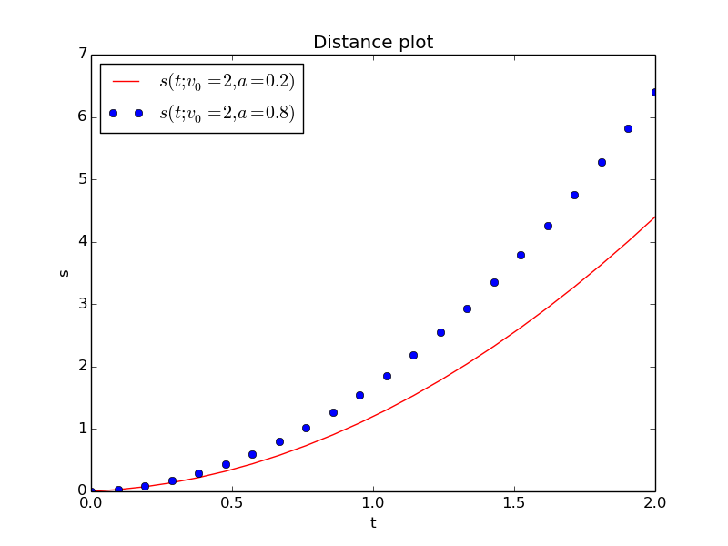

This is a very quick intro to Python programming
Variables, loops, lists, and arrays
Do you have access to Python?
Mathematical example
A program for evaluating a formula
Assignment statements assign a name to an object
Formatted output with text and numbers
Programming with a while loop
Output of the previous program
Structure of a while loop
Let's take a closer look at the output of our program
Let's examine the program in the Python Online Tutor
Ooops, why is a <= 1.2 when a is 1.2? Round-off errors!
Rule: never a == b for real a and b! Always use a tolerance!
A list collects several objects in a given sequence
Store our table in two lists, one for each column
For loops
Traditional for loop: integer counter over list/array indices
Let's replace our while loop by a for loop
Traversal of multiple lists at the same time with zip
Arrays are computationally efficient lists of numbers
Examples on using arrays
numpy functions creates entire arrays at once
Let's use arrays in our previous program
Standard mathematical functions are found in the math module
Use the numpy module for standard mathematical functions applied to arrays
Array assignment gives view (no copy!) of array data
Copying array data requires special action via the copy method
Construction of tridiagonal and sparse matrices
Example on constructing a tridiagonal matrix
Example on solving a tridiagonal system
Plotting
Plotting of multiple curves
Functions and branching
Functions
Functions can have multiple arguments
Keyword arguments are arguments with default values
Vectorization speeds up the code
Python functions written for scalars normally work for arrays too!
Python functions can return multiple values
A more general mathematical formula (part I)
A more general mathematical formula (part II)
Basic if-else tests
Multi-branch if tests
Implementation of a piecewisely defined function with if
Python functions containing if will not accept array arguments
Remedy 1: Call the function with scalar arguments
Remedy 2: Vectorize the if test with where
Remedy 3: Vectorize the if test with array indexing
Files
File reading
Code for reading files with lines variable = value
Splitting lines into words is a frequent operation
The magic eval function
Implementing a calculator in Python
Modern Python often applies the with statement for file handling
File writing
Simplified writing of tabular data to file via numpy.savetxt
Simplified reading of tabular data from file via numpy.loadtxt
Classes
A very simple class
How can we use this class?
The self argument is a difficult thing for newcomers...
A class for representing a mathematical function
The class code
Class implementation of \( f(x,y,z; p_1,p_2,\ldots,p_n) \)
Many methods:
sudo apt-get install
Most examples will involve this formula: $$ \begin{equation} \label{basics:seq} s = v_0t + \frac{1}{2}at^2 \end{equation} $$ We may view \( s \) as a function of \( t \): \( s(t) \), and also include the parameters in the notation: \( s(t;v_0,a) \).
Compute \( s \) for \( t=0.5 \), \( v_0=2 \), and \( a=0.2 \).
t = 0.5
v0 = 2
a = 0.2
s = v0*t + 0.5*a*t**2
print s
Terminal> python distance.py
1.025
t = 0.5 # real number makes float object
v0 = 2 # integer makes int object
a = 0.2 # float object
s = v0*t + 0.5*a*t**2 # float object
Rule:
s=1.025
print 's=%g' % s # g: compact notation
print 's=%.2f' % s # f: decimal notation, .2f: 2 decimals
Modern alternative: format string syntax
print 's={s:.2f}'.format(s=s)
v0 = 2
a = 0.2
dt = 0.1 # Increment
t = 0 # Start value
while t <= 2:
s = v0*t + 0.5*a*t**2
print t, s
t = t + dt
Terminal> python while.py
0 0.0
0.1 0.201
0.2 0.404
0.3 0.609
0.4 0.816
0.5 1.025
0.6 1.236
0.7 1.449
0.8 1.664
0.9 1.881
1.0 2.1
1.1 2.321
1.2 2.544
1.3 2.769
1.4 2.996
1.5 3.225
1.6 3.456
1.7 3.689
1.8 3.924
1.9 4.161
while condition:
<intented statement>
<intented statement>
<intented statement>
Note:
condition is a boolean expression (e.g., t <= 2)
Terminal> python while.py
0 0.0
0.1 0.201
0.2 0.404
...
1.8 3.924
1.9 4.161
The last line contains 1.9, but the while loop should run also when
\( t=2 \) since the test is t <= 2. Why is this test False?
Python Online Tutor: step through the program and examine variables (view in Chrome)
a <= 1.2 when a is 1.2? Round-off errors!
da makes a = 1.2000000000000002
a == b for real a and b! Always use a tolerance!
a = 1.2
b = 0.4 + 0.4 + 0.4
boolean_condition1 = a == b # may be False
# This is the way to do it
tol = 1E-14
boolean_condition2 = abs(a - b) < tol # True
A list of numbers:
L = [-1, 1, 8.0]
A list can contain any type of objects, e.g.,
L = ['mydata.txt', 3.14, 10] # string, float, int
Some basic list operations:
>>> L = ['mydata.txt', 3.14, 10]
>>> print L[0] # print first element (index 0)
mydata.txt
>>> print L[1] # print second element (index 1)
3.14
>>> del L[0] # delete the first element
>>> print L
[3.14, 10]
>>> print len(L) # length of L
2
>>> L.append(-1) # add -1 at the end of the list
>>> print L
[3.14, 10, -1]
v0 = 2
a = 0.2
dt = 0.1 # Increment
t = 0
t_values = []
s_values = []
while t <= 2:
s = v0*t + 0.5*a*t**2
t_values.append(t)
s_values.append(s)
t = t + dt
print s_values # Just take a look at a created list
# Print a nicely formatted table
i = 0
while i <= len(t_values)-1:
print '%.2f %.4f' % (t_values[i], s_values[i])
i += 1 # Same as i = i + 1
A for loop is used for visiting elements in a list, one by one:
>>> L = [1, 4, 8, 9]
>>> for e in L:
... print e
...
1
4
8
9
Demo in the Python Online Tutor:
somelist = ['file1.dat', 22, -1.5]
for i in range(len(somelist)):
# access list element through index
print somelist[i]
Note:
range returns a list of integersrange(a, b, s) returns the integers
a, a+s, a+2*s, ... up to but not including (!!) brange(b) implies a=0 and s=1range(len(somelist)) returns [0, 1, 2]
v0 = 2
a = 0.2
dt = 0.1 # Increment
t_values = []
s_values = []
n = int(round(2/dt)) + 1 # No of t values
for i in range(n):
t = i*dt
s = v0*t + 0.5*a*t**2
t_values.append(t)
s_values.append(s)
print s_values # Just take a look at a created list
# Make nicely formatted table
for t, s in zip(t_values, s_values):
print '%.2f %.4f' % (t, s)
# Alternative implementation
for i in range(len(t_values)):
print '%.2f %.4f' % (t_values[i], s_values[i])
zip
for e1, e2, e3, ... in zip(list1, list2, list3, ...):
Alternative: loop over a common index for the lists
for i in range(len(list1)):
e1 = list1[i]
e2 = list2[i]
e3 = list3[i]
...
numpy module
>>> import numpy
>>> L = [1, 4, 10.0] # List of numbers
>>> a = numpy.array(L) # Convert to array
>>> print a
[ 1. 4. 10.]
>>> print a[1] # Access element through indexing
4.0
>>> print a[0:2] # Extract slice (index 2 not included!)
[ 1. 4.]
>>> print a.dtype # Data type of an element
float64
>>> b = 2*a + 1 # Can do arithmetics on arrays
>>> print b
[ 3. 9. 21.]
numpy functions creates entire arrays at once
Apply \( \ln \) to all elements in array a:
>>> c = numpy.log(a)
>>> print c
[ 0. 1.38629436 2.30258509]
Create \( n+1 \) uniformly distributed coordinates in \( [a,b] \):
t = numpy.linspace(a, b, n+1)
Create array of length \( n \) filled with zeros:
t = numpy.zeros(n)
s = numpy.zeros_like(t) # zeros with t's size and data type
import numpy
v0 = 2
a = 0.2
dt = 0.1 # Increment
n = int(round(2/dt)) + 1 # No of t values
t_values = numpy.linspace(0, 2, n+1)
s_values = v0*t + 0.5*a*t**2
# Make nicely formatted table
for t, s in zip(t_values, s_values):
print '%.2f %.4f' % (t, s)
Note: no explicit loop for computing s_values!
math module
>>> import math
>>> print math.sin(math.pi)
1.2246467991473532e-16 # Note: only approximate value
Get rid of the math prefix:
from math import sin, pi
print sin(pi)
# Or import everything from math
from math import *
print sin(pi), log(e), tanh(0.5)
numpy module for standard mathematical functions applied to arrays Matlab users can do
from numpy import *
x = linspace(0, 1, 101)
y = exp(-x)*sin(pi*x)
The Python community likes
import numpy as np
x = np.linspace(0, 1, 101)
y = np.exp(-x)*np.sin(np.pi*x)
Our convention: use np prefix, but not in formulas involving
math functions
import numpy as np
x = np.linspace(0, 1, 101)
from numpy import sin, exp, pi
y = exp(-x)*sin(pi*x)
Consider array assignment b=a:
a = np.linspace(1, 5, 5)
b = a
Here, b is a just view or a pointer to the data of a - no copying of
data!
See the following example how changes in b inflict changes in a
>>> a
array([ 1., 2., 3., 4., 5.])
>>> b[0] = 5 # changes a[0] to 5
>>> a
array([ 5., 2., 3., 4., 5.])
>>> a[1] = 9 # changes b[1] to 9
>>> b
array([ 5., 9., 3., 4., 5.])
copy method
>>> c = a.copy() # copy all elements to new array c
>>> c[0] = 6 # a is not changed
>>> a
array([ 1., 2., 3., 4., 5.])
>>> c
array([ 6., 2., 3., 4., 5.])
>>> b
array([ 5., 2., 3., 4., 5.])
Note: b has still the values from the previous example
spdiags function may be used to construct a sparse matrix from diagonals
>>> import numpy as np
>>> N = 6
>>> diagonals = np.zeros((3, N)) # 3 diagonals
diagonals[0,:] = np.linspace(-1, -N, N)
diagonals[1,:] = -2
diagonals[2,:] = np.linspace(1, N, N)
>>> import scipy.sparse
>>> A = scipy.sparse.spdiags(diagonals, [-1,0,1], N, N, format='csc')
>>> A.toarray() # look at corresponding dense matrix
[[-2. 2. 0. 0. 0. 0.]
[-1. -2. 3. 0. 0. 0.]
[ 0. -2. -2. 4. 0. 0.]
[ 0. 0. -3. -2. 5. 0.]
[ 0. 0. 0. -4. -2. 6.]
[ 0. 0. 0. 0. -5. -2.]]
We can solve \( Ax=b \) with tridiagonal matrix \( A \): choose some \( x \), compute \( b=Ax \) (sparse/tridiagonal matrix product!), solve \( Ax=b \), and check that \( x \) is the desired solution:
>>> x = np.linspace(-1, 1, N) # choose solution
>>> b = A.dot(x) # sparse matrix vector product
>>> import scipy.sparse.linalg
>>> x = scipy.sparse.linalg.spsolve(A, b)
>>> print x
[-1. -0.6 -0.2 0.2 0.6 1. ]
Check against dense matrix computations:
>>> A_d = A.toarray() # corresponding dense matrix
>>> b = np.dot(A_d, x) # standard matrix vector product
>>> x = np.linalg.solve(A_d, b) # standard Ax=b algorithm
>>> print x
[-1. -0.6 -0.2 0.2 0.6 1. ]
Plotting is done with matplotlib:
import numpy as np
import matplotlib.pyplot as plt
v0 = 0.2
a = 2
n = 21 # No of t values for plotting
t = np.linspace(0, 2, n+1)
s = v0*t + 0.5*a*t**2
plt.plot(t, s)
plt.savefig('myplot.png')
plt.show()
The plotfile myplot.png looks like
import numpy as np
import matplotlib.pyplot as plt
v0 = 0.2
n = 21 # No of t values for plotting
t = np.linspace(0, 2, n+1)
a = 2
s0 = v0*t + 0.5*a*t**2
a = 3
s1 = v0*t + 0.5*a*t**2
plt.plot(t, s0, 'r-', # Plot s0 curve with red line
t, s1, 'bo') # Plot s1 curve with blue circles
plt.xlabel('t')
plt.ylabel('s')
plt.title('Distance plot')
plt.legend(['$s(t; v_0=2, a=0.2)$', '$s(t; v_0=2, a=0.8)$'],
loc='upper left')
plt.savefig('myplot.png')
plt.show()


s(t)
def s(t):
return v0*t + 0.5*a*t**2
v0 = 0.2
a = 4
value = s(3) # Call the function
Note:
defv0 and a are global variables, which
must be initialized before s(t) is called
v0 and a as function arguments instead of global variables:
def s(t, v0, a):
return v0*t + 0.5*a*t**2
value = s(3, 0.2, 4) # Call the function
# More readable call
value = s(t=3, v0=0.2, a=4)
def s(t, v0=1, a=1):
return v0*t + 0.5*a*t**2
value = s(3, 0.2, 4) # specify new v0 and a
value = s(3) # rely on v0=1 and a=1
value = s(3, a=2) # rely on v0=1
value = s(3, v0=2) # rely on a=1
value = s(t=3, v0=2, a=2) # specify everything
value = s(a=2, t=3, v0=2) # any sequence allowed
Scalar code (work with one number at a time):
def s(t, v0, a):
return v0*t + 0.5*a*t**2
for i in range(len(t)):
s_values[i] = s(t_values[i], v0, a)
Vectorized code: apply s to the entire array
s_values = s(t_values, v0, a)
How can this work?
tr1 = v0*t (scalar times array)r2 = t**2 (square each element)r3 = 0.5*a*r2 (scalar times array)r1 + r3 (add each element)True if computations involve arithmetic operations and math functions:
from math import exp, sin
def f(x):
return 2*x + x**2*exp(-x)*sin(x)
v = f(4) # f(x) works with scalar x
# Redefine exp and sin with their vectorized versions
from numpy import exp, sin, linspace
x = linspace(0, 4, 100001)
v = f(x) # f(x) works with array x
Return \( s(t)=v_0t+\frac{1}{2}at^2 \) and \( s'(t)=v_0 + at \):
def movement(t, v0, a):
s = v0*t + 0.5*a*t**2
v = v0 + a*t
return s, v
s_value, v_value = movement(t=0.2, v0=2, a=4)
return s, v means that we return a tuple (\( \approx \) list):
>>> def f(x):
... return x+1, x+2, x+3
...
>>> r = f(3) # Store all three return values in one object r
>>> print r
(4, 5, 6)
>>> type(r) # What type of object is r?
<type 'tuple'>
>>> print r[1]
5
Tuples are constant lists (cannot be changed)
Equations from basic kinematics: $$ \begin{align*} v = \frac{ds}{dt},\quad s(0)=s_0\\ a = \frac{dv}{dt},\quad v(0)=v_0 \end{align*} $$
Integrate to find \( v(t) \): $$ \int_0^t a(t)dt = \int_0^t \frac{dv}{dt} dt$$ which gives $$ v(t) = v_0 + \int_0^t a(t)dt $$
Integrate again over \( [0,t] \) to find \( s(t) \): $$ s(t) = s_0 + v_0t + \int_0^t\left( \int_0^t a(t)dt \right) dt$$
Example: \( a(t)=a_0 \) for \( t\in[0,t_1] \), then \( a(t)=0 \) for \( t>t_1 \): $$ s(t) = \left\lbrace\begin{array}{ll} s_0 + v_0 t + \frac{1}{2}a_0 t^2,& t\leq t_1\\ s_0 + v_0t_1 + \frac{1}{2}a_0 t_1^2 + a_0t_1(t-t_1),& t> t_1 \end{array}\right. $$
Need if test to implement this!
An if test has the structure
if condition:
<statements when condition is True>
else:
<statements when condition is False>
Here,
condition is a boolean expression with value True or
False.
if t <= t1:
s = v0*t + 0.5*a0*t**2
else:
s = v0*t + 0.5*a0*t1**2 + a0*t1*(t-t1)
if condition1:
<statements when condition1 is True>
elif condition2:
<statements when condition1 is False and condition2 is True>
elif condition3:
<statements when condition1 and conditon 2 are False
and condition3 is True>
else:
<statements when condition1/2/3 all are False>
Just if, no else:
if condition:
<statements when condition is True>
A Python function implementing the mathematical function $$ s(t) = \left\lbrace\begin{array}{ll} s_0 + v_0 t + \frac{1}{2}a_0 t^2,& t\leq t_1\\ s_0 + v_0t_1 + \frac{1}{2}a_0 t_1^2 + a_0t_1(t-t_1),& t> t_1 \end{array}\right. $$
reads
def s_func(t, v0, a0, t1):
if t <= t1:
s = v0*t + 0.5*a0*t**2
else:
s = v0*t + 0.5*a0*t1**2 + a0*t1*(t-t1)
return s
>>> def f(x): return x if x < 1 else 2*x
...
>>> import numpy as np
>>> x = np.linspace(0, 2, 5)
>>> f(x)
Traceback (most recent call last):
...
ValueError: The truth value of an array with more than one
element is ambiguous. Use a.any() or a.all()
Problem: x < 1 evaluates to a boolean array, not just a boolean
n = 201 # No of t values for plotting
t1 = 1.5
t = np.linspace(0, 2, n+1)
s = np.zeros(n+1)
for i in range(len(t)):
s[i] = s_func(t=t[i], v0=0.2, a0=20, t1=t1)
Can now easily plot:
plt.plot(t, s, 'b-')
plt.plot([t1, t1], [0, s_func(t=t1, v0=0.2, a0=20, t1=t1)], 'r--')
plt.xlabel('t')
plt.ylabel('s')
plt.savefig('myplot.png')
plt.show()
where Functions with if tests require a complete rewrite to work with arrays.
s = np.where(condition, s1, s2)
Explanation:
condition: array of boolean valuess[i] = s1[i] if condition[i] is Trues[i] = s2[i] if condition[i] is False
s = np.where(t <= t1,
v0*t + 0.5*a0*t**2,
v0*t + 0.5*a0*t1**2 + a0*t1*(t-t1))
Note that t <= t1 with array t and scalar t1 results in a boolean
array b where b[i] = t[i] <= t1.
b be a boolean array (e.g., b = t <= t1)s[b] selects all elements s[i] where b[i] is Trueexpr of length
len(s[b]) to s[b]: s[b] = (expr)[b]b as t <= t1 and t > t1:
s = np.zeros_like(t) # Make s as zeros, same size & type as t
s[t <= t1] = (v0*t + 0.5*a0*t**2)[t <= t1]
s[t > t1] = (v0*t + 0.5*a0*t1**2 + a0*t1*(t-t1))[t > t1]
Put input data in a text file:
v0 = 2
a = 0.2
dt = 0.1
interval = [0, 2]
v0, a, dt, and interval?
variable = value
infile = open('.input.dat', 'r')
for line in infile:
# Typical line: variable = value
variable, value = line.split('=')
variable = variable.strip() # remove leading/traling blanks
if variable == 'v0':
v0 = float(value)
elif variable == 'a':
a = float(value)
elif variable == 'dt':
dt = float(value)
elif variable == 'interval':
interval = eval(value)
infile.close()
>>> line = 'v0 = 5.3'
>>> variable, value = line.split('=')
>>> variable
'v0 '
>>> value
' 5.3'
>>> variable.strip() # strip away blanks
'v0'
Note: must convert value to float before we can compute with
the value!
eval function
eval(s) executes a string s as a Python expression and creates the
corresponding Python object
>>> obj1 = eval('1+2') # Same as obj1 = 1+2
>>> obj1, type(obj1)
(3, <type 'int'>)
>>> obj2 = eval('[-1, 8, 10, 11]')
>>> obj2, type(obj2)
([-1, 8, 10, 11], <type 'list'>)
>>> from math import sin, pi
>>> x = 1
>>> obj3 = eval('sin(pi*x)')
>>> obj3, type(obj3)
(1.2246467991473532e-16, <type 'float'>)
Why is this so great? We can read formulas, lists, expressions as
text from file and with eval turn them into live Python objects!
Demo:
Terminal> python calc.py "1 + 0.5*2"
2.0
Terminal> python calc.py "sin(pi*2.5) + exp(-4)"
1.0183156388887342
Just 5 lines of code:
import sys
command_line_expression = sys.argv[1]
from math import * # Define sin, cos, exp, pi, etc.
result = eval(command_line_expression)
print result
with statement for file handling
with open('.input.dat', 'r') as infile:
for line in infile:
...
No need to close the file when using with
t_values and
s_values
outfile = open('table1.dat', 'w')
outfile.write('# t s(t)\n') # write table header
for t, s in zip(t_values, s_values):
outfile.write('%.2f %.4f\n' % (t, s))
numpy.savetxt
import numpy as np
# Make two-dimensional array of [t, s(t)] values in each row
data = np.array([t_values, s_values]).transpose()
# Write data array to file in table format
np.savetxt('table2.dat', data, fmt=['%.2f', '%.4f'],
header='t s(t)', comments='# ')
table2.dat:
# t s(t)
0.00 0.0000
0.10 0.2010
0.20 0.4040
0.30 0.6090
0.40 0.8160
0.50 1.0250
0.60 1.2360
...
1.90 4.1610
2.00 4.4000
numpy.loadtxt
data = np.loadtxt('table2.dat', comments='#')
Note:
# are skipped in the readingdata is a two-dimensional array: data[i,0]
holds the \( t \) value and data[i,1] the \( s(t) \) value in the i-th
row
adump for printing a
class Trivial:
def __init__(self, a):
self.a = a
def dump(self):
print self.a
Class terminology: Functions are called methods and variables are called attributes.
First, make an instance (object) of the class:
t = Trivial(a=4)
t.dump()
Note:
Trivial(a=4) actually means Trivial.__init__(t, 4)self is an argument in __init__ and dump, but not used in the calls__init__ is called constructor and is used to construct an object
(instance) if the classt.dump() actually means Trivial.dump(t) (self is t)self argument is a difficult thing for newcomers...
It takes time and experience to understand the self argument in
class methods!
self must always be the first argumentself is never used in callsself is used to access attributes and methods inside methodsself.
self is confusing in the beginning, but later it greatly helps
the understanding of how classes work!
Function with one independent variable \( t \) and two parameters \( v_0 \) and \( a \): $$ s(t; v_0, a) = v_0t + \frac{1}{2}at^2$$
Class representation of this function:
v0 and a are variables (data)t
s = Distance(v0=2, a=0.5) # create instance
v = s(t=0.2) # compute formula
class Distance:
def __init__(self, v0, a):
self.v0 = v0
self.a = a
def __call__(self, t):
v0, a = self.v0, self.a # make local variables
return v0*t + 0.5*a*t**2
s = Distance(v0=2, a=0.5) # create instance
v = s(t=0.2) # actually s.__call__(t=0.2)
__call__(self, x, y, z) is used to compute \( f(x, y, z) \)
class F:
def __init__(self, p1, p2, ...):
self.p1 = p1
self.p2 = p2
...
def __call__(self, x, y, z):
# return formula involving x, y, z and self.p1, self.p2 ...
f = F(p1=..., p2=..., ...) # create instance with parameters
print f(1, 4, -1) # evaluate f(x,y,z) function